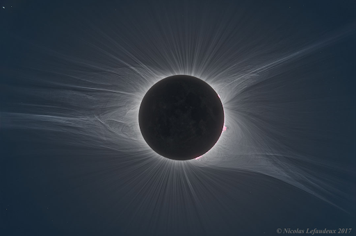
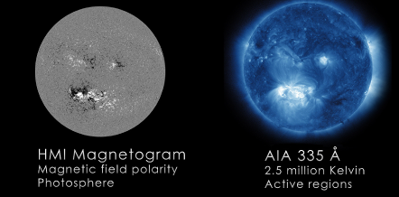
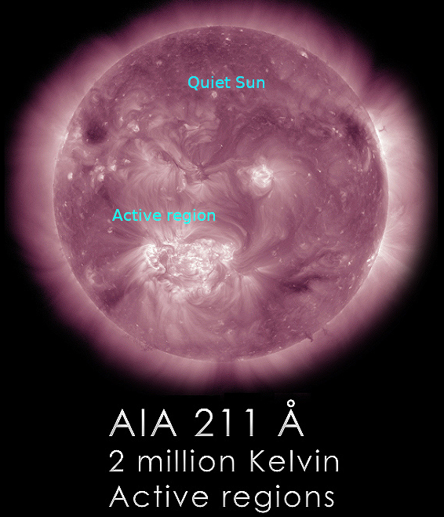
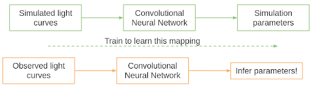

Using machine learning to infer Solar coronal heating
This article traces the origins of the coronal heating problem, and describes in vivid detail our efforts in resolving this through machine learning. This is a non-technical article based on our paper, but references have been appended for the interested reader!
The Sun is a spectacular celestial object that has captivated humanity for long and holds many unresolved secrets. It is a huge ball of gas, mainly made of hydrogen, but containing many other elements like Sodium, Calcium, Magnesium, Iron, etc. Generally, the Sun is seen as a disc in the sky. This disc of the Sun is known as photosphere, or the surface of the Sun. However, during a total solar eclipse when the Sun is hidden by the moon, streams of gas may be seen extending outwards from the photosphere as shown below. This faint region of the solar atmosphere is called the Solar corona.

Fig.1: Image of the extended solar corona taken during an eclipse. Image source: Nicolas Lefaudeux .
Since the 1900s, astronomers have been studying the Sun and various stars through the spectrum of these stars. The spectrum of any star is basically the amount of light emitted at different wavelengths. Light as we know can be (for our purposes!) thought of as a wave1, with the wavelength telling us, in some sense, how long each wave is. Stars produce light of various wavelengths, which is mainly controlled by its temperature at the photosphere. However, different elements in the atmosphere of stars can also give rise to bumps or dips in this spectrum, depending on how many electrons each element has. The number of electrons however depends on how hot the particular atom or ion is. Generally, the hotter an ion is, the fewer electrons it has. Hence, such bumps can be used to measure the temperature at various locations (and not just at the photosphere!) in the atmosphere of stars. This was the seminal contribution of Meghnad Saha and Cecilia Payne-Gaposchkin2.
Early on, astronomers analyzed the photosphere of the Sun, and found it to be at approximately 5500 K. In the 1940s, astronomers then took to analyzing the spectrum of the solar corona. Now, common sense tells us that as one moves away from a hot object, the temperature must reduce. Hence, we expect the solar corona to be at a lower temperature than the photosphere. However, astronomers found that as one moves from the photosphere into the solar atmosphere, the temperature initially drops and then starts rising to more than a million degrees Kelvin in the corona (Bengt Edlen., 1945, P. Swings., 1945)! The corona was found to be so hot, that elements like Iron, which generally have 26 electrons in their atoms, had lost more than 13 electrons! How does this occur?
This has been a long-standing puzzle with a deceptively simple answer. The simple answer is: common sense is correct. Only if one moves away from a hot object will one expect the temperature to fall. It would not be the case if, for some reason, heat is generated in the solar corona. This heat source keeps the corona hot and at a million degrees Kelvin. Then the question arises: What is this source of heat?
A simple guess can be made by looking at the Sun at the photosphere and in the corona. The picture below is taken from a suite of instruments called Atmospheric Imaging Assembly (AIA)[Paul Boerner et al., 2012] & Helioseismic and Magnetic Imager (HMI)[P. H. Scherrer et al., 2011] on board the Solar Dynamics Observatory (SDO). SDO is a NASA satellite which observes the Sun predominantly in the photosphere and the corona. Think of it as an extremely complex camera (which it literally is!), taking pictures across different temperatures for scientists to study. The left image shows the map of the Magnetic field along the line of sight across the photosphere, with black and white representing negative and positive magnetic field polarities respectively. The grey areas have very weak magnetic fields, while the field is stronger if the color is blacker or whiter. On the right, we have the corresponding image of the corona, taken from AIA. Compare these two images carefully: it seems that the black/white areas from the magnetic field are located in the same regions as the bright areas in the corona. Hence it seems that the corona is brighter for regions with a stronger magnetic field. Might this be related to the corona’s temperature?

Fig.2: On the left, we have the magnetic field on the Sun’s photosphere, taken through HMI. On the right, we have an image of the solar corona, taken through AIA. Image source: NASA/SDO HMI & AIA .
It was realized early on that the magnetic field of the Sun contains a lot of energy. This energy can, in principle, be used up to heat the corona. We now ask deeper questions: How does this occur? And how do we know this energy is enough to heat the corona?
One of the more popular mechanisms of converting magnetic energy to heat is through impulsive events (Parker, E. N., 1988). Impulsive events are basically bursts of energy, where magnetic energy is dissipated as heat. The impulsive events, which convert magnetic to heat energy, are known to occur at a variety of length and time scales. These could be large or small and may last for hours or minutes, depending on how much energy was released. The large versions of these events, which release tremendous amounts of energy, are well known as solar flares. Many studies have been done on these large flares or on smaller events called microflares. The microflares, as the name suggests, have a million times less energy than the large flares. However, they are much more frequent in the corona. The hypothesis by Parker, E. N., 1988, and further expansion by Hudson.H.S., 1991; is that such impulsive events are much more frequent if they have low energy, and a combination of such events may maintain the coronal temperature. This is called the nanoflare hypothesis. It essentially translates to the hypothesis that one first needs to count the number of events that occur at each energy scale. Then, suppose one finds the total heat dissipated due to all such events at each energy to be larger for smaller events. In that case, impulsive heating is enough to maintain the solar corona’s temperature.
Studies generally attempt to count how many events occur at given energy and get a sense of how much energy is released in such events. Then, they compare if these energies are enough to maintain the corona at a million-degree Kelvin or not. Such statistics, however, are ridden with a grave fallacy: If individual events can be seen, we can count them. What if we cannot even see these individual events? What if all we see is a combination of a multitude of such events? This question has plagued solar physicists for a long time.
A possible answer to this question lies in what in the corona do we see. Studies are generally targeted towards the large, bright, and beautiful structures called Active Regions. In Fig.3, a picture of the solar corona is seen. Immediately, we can see that there is a bright region near the center, and this is called an Active Region. These active regions contain a large amount of magnetic energy which can be converted to heat. However, there are other regions in the corona where there are no beautiful large structures. These structures are known as Quiet regions. Approximately every 11 years, the Sun is seen to wake up, become violent, and then go to sleep. This is known as the solar cycle. The active regions are predominantly seen when the Sun is active (the violence comes from active regions, mostly!). The solar corona, on the other hand, is hot even when the Sun is quiet and sleeping! This means we must study this quiet time to figure out coronal heating!

Fig. 3: The solar corona as seen from the 211 A passband of AIA shows two distinct structures here. One kind of structure is the bright Active Regions, and the other is the background calm Quiet Sun. Image source: Solar Dynamics Observatory .
In our work, we addressed (or rather, incorporated) both of these characteristics to provide constraints on the viability of these impulsive events. First off, we took only the Quiet Sun data. All other large, dynamic events were left out. Second, we used a statistical impulsive heating model (A. Pauluhn et al., 2006) to infer heating signatures. But how?
Enter Deep learning. Deep learning is a set of techniques (generally referring to neural networks) used to perform inferences on big data. These neural networks can “learn” the data given to them and perform any assigned task. When you check for translation of words on Google, it basically deploys deep learning in the background. The neural network used for such language-to-language translations has been trained on many statements and correspondences between two languages. Hence, when you ask it to translate words (or even sentences), it can translate pretty much very well!
For our work, we took the statistical impulsive heating model and made a large number of simulations. The impulsive heating model generates a time series of intensity (called light curves), given some free parameters. These simulations statistically would represent the light curves of the Quiet corona. However, there are no objective techniques to compare these simulations with observations in a statistically robust manner. Hence, we trained our deep learning model on mapping the light curves back to the free parameters. This is called learning an inversion code. The inversion code takes in the light curves, analyzes them in a highly complicated non-linear way, and gives out the best parameter set representing the light curve. The inversion code is checked on a testing set of simulations. Think of this whole procedure as attending a class (=training) and writing an exam (=testing). Since you typically do not know what questions will be asked in an exam, the testing set contains simulations that were not used for training. Hence, the performance of the inversion code is checked and validated in this way.
Once this inversion code is checked, we apply it on approx. 3,00,000 light curves from the Sun to infer the free parameters. In this way, we circumvent the problem of not seeing individual events in the Quiet Sun – we can infer their statistical signatures! This scheme is explained below:

Fig.4: A summary of our procedure. The simulated light curves are mapped to their parameters by training a deep learning model, which in our case is a Convolutional Neural Network. Then, these parameters can be inferred by feeding in the observed light curves in the model.
So what do we get from applying this elaborate scheme? We find the impulsive events occur at a frequency of around 2 events per minute. Each event lasts approximately 10-20 mins. Overall, we find smaller events to dominate over larger events, which seems to confirm the hypothesis of impulsive heating of the corona.
Then, we studied various properties of these heating events. First, we found that events can be either large and occur rarely, or be very small and occur frequently. This means that there exists a well of energy, that can be emptied by occasional large buckets or very frequent small buckets.
Second, we found that larger events die down much faster than smaller events. This counterintuitive result seems to arrive as a result of what is called thermal conduction. Thermal conduction is the reason why, if you leave the ladle for too long in the kadai, it gets very hot. Heat travels through metal efficiently, and makes it hotter. Hotter the kadai3, the faster the ladle gets hotter. Similar phenomenon occurs in the corona, but here the ladle is the magnetic field lines, and the kadai is the impulsive event. The thermal conduction along magnetic field lines is very efficient, so the more the energy, the faster it is transmitted. We find signatures of this thermal conduction through our analysis.
Finally, we find excellent correspondence between the properties of these small-scale events and large-scale events like solar flares. It almost seems like the small events we find are like younger siblings of the large-scale flares. And through a marriage of deep learning with solar physics knowledge, we can impose constraints on the heating of the solar corona!
Original paper: On the Impulsive Heating of Quiet Solar Corona
First Author: Vishal Upendran
Co-authors: Durgesh Tripathi
First author’s Institution: Inter University Centre for Astronomy and Astrophysics, Pune, 411007, India
-
Light in general behaves as a wave if its wavelength is “large”, and behaves as a particle if its wavelength is “small”. If you want to get confused more, see this link. ↩
-
This by the way is a wonderful tale of interdisciplinary science - Quantum mechanics, statistical physics and astrophysics mixing like rice, jaggery and ghee. Read more here ↩
-
Ladle is the big spoon-like thing you use to mix stuff in the kadai. ↩